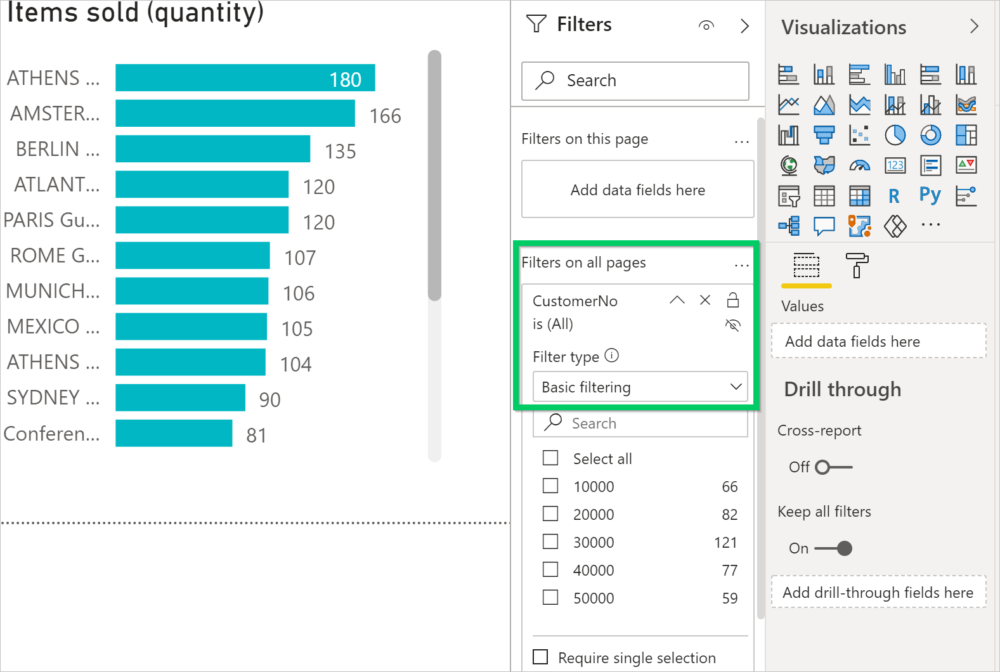
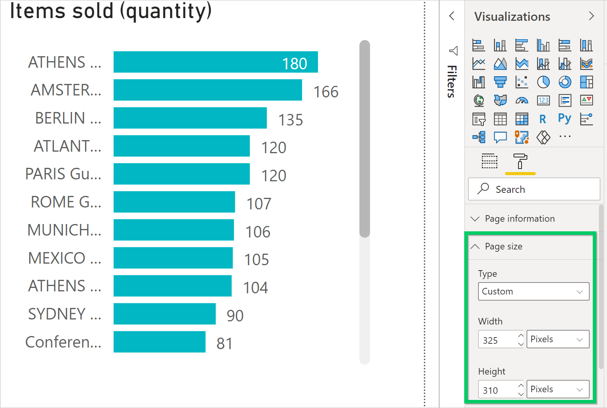

Power BI-Berichte zum Anzeigen von Listendaten in Business Central erstellen
Dynamics 365 Business Central umfasst ein Power BI-Infobox-Steuerelement auf mehreren Schlüssellistenseiten. Der Zweck dieser Infobox ist die Anzeige von Power BI-Berichten, die sich auf Datensätze in den Listen beziehen und zusätzlichen Einblick in die Daten bieten. Die Idee ist, dass, wenn Sie sich zwischen den Zeilen in der Liste bewegen, der Bericht für den ausgewählten Eintrag aktualisiert wird.
Dynamics 365 Business Central kommt mit einigen dieser Berichte. Sie können auch eigene benutzerdefinierte Berichte erstellen, die in dieser Infobox angezeigt werden. Das Erstellen dieser Berichte ähnelt anderen Berichten. Es gibt jedoch einige Entwurfsregeln, die Sie befolgen müssen, um sicherzustellen, dass die Berichte wie erwartet angezeigt werden. Diese Regeln werden in diesem Artikel erläutert.
Hinweis
Allgemeine Informationen zum Erstellen und Veröffentlichen von Power BI-Berichten für Business Central finden Sie unter Power BI-Berichte zum Anzeigen erstellen Dynamics 365 Business Central-Daten.
Voraussetzungen
- Ein Power BI-Konto.
- Power BI Desktop.
Einen Bericht für eine Listenseite erstellen
- Starten Sie Power BI Desktop.
Wählen Sie Daten abrufen aus, und beginnen Sie mit der Auswahl der Datenquelle für den Bericht.
Geben Sie die Business Central-Listenseiten an, die die Daten enthalten, die Sie im Bericht haben wollen. Um z.B. einen Bericht für die Liste Verkaufsrechnungen zu erstellen, schließen Sie die Seiten ein, die sich auf den Verkauf beziehen.
Weitere Informationen finden Sie in den Anweisungen Business Central als Datenquelle in Power BI Desktop hinzufügen.
Definieren Sie den Berichtsfilter.
Um die Daten für den ausgewählten Datensatz in der Liste zu aktualisieren, fügen Sie dem Bericht einen Filter hinzu. Der Filter muss ein Feld der Datenquelle enthalten, mit dem jeder Datensatz in der Liste eindeutig identifiziert wird. In Bezug auf Entwickler ist dieses Feld der Primärschlüssel. In den meisten Fällen ist der Primärschlüssel für eine Liste Nr. Feld eingetragen.
Führen Sie die folgenden Schritte aus, um den Filter einzustellen:
- Wählen Sie unter Filter das Primärschlüsselfeld aus der Liste der verfügbaren Felder aus.
- Ziehen Sie den Bereich Filter und legen Sie ihn in der Box Filter auf allen Seiten ab.
Stellen Sie den Filtertyp auf Grundfilterung. Es darf sich nicht um einen Seiten-, visuellen oder erweiterten Filter handeln.

Entwerfen Sie den Berichtslayout.
Erstellen Sie das Layout, indem Sie Felder ziehen und Visualisierungen hinzufügen. Weitere Informationen finden Sie unter Mit der Berichtsansicht in Power BI Desktop arbeiten in der Power BI-Dokumentation.
In den nächsten Abschnitten erfahren Sie, wie Sie die Größe des Berichts ändern und mehrere Seiten verwenden.
Speichern und benennen Sie den Bericht.
Geben Sie dem Bericht einen Namen, der den Namen der mit dem Bericht verknüpften Listenseite enthält, wie er im Client steht. Bei dem Namen wird nicht zwischen Groß- und Kleinschreibung unterschieden. Angenommen, der Bericht ist für die Listenseite Verkaufsrechnungen. In diesem Fall fügen Sie die Wörter Verkaufsrechnungen irgendwo im Namen ein, z. B. Meine Verkaufsrechnungen.pbix oder Meine_Verkaufsrechnungen_liste.pbix.
Diese Namenskonvention ist nicht zwingend erforderlich. Sie beschleunigt jedoch das Auswählen von Berichten in Business Central. Wenn die Berichtauswahlseite von einer Listenseite aus geöffnet wird, wird automatisch ein Filter auf der Basis des Seitennamens angewendet. Der Filter hat die Syntax:
@*<caption>*, wie@*Sales Invoices*. Diese Filterung wird durchgeführt, um die Anzahl der angezeigten Berichte zu beschränken. Benutzer können den Filter entfernen, um eine vollständige Liste der in Power BI verfügbaren Berichte zu erhalten.Wenn Sie fertig sind, veröffentlichen Sie den Bericht wie gewohnt.
Weitere Informationen finden Sie unter Veröffentlichen eines Berichts.
Testen Sie den Bericht.
Sobald der Bericht in Ihrem Arbeitsbereich veröffentlicht wurde, sollte er in der FactBox Power BI auf der Listenseite in Business Central verfügbar sein.
Führen Sie die folgenden Schritte aus, um es zu testen.
- Öffnen Sie Business Central, und gehen Sie zur Listenseite.
- Wenn Sie die Power BI-Infobox nicht sehen, wechseln Sie zur Aktionsleiste und wählen Sie Aktionen > Anzeigen > Power BI-Berichte anzeigen/ausblenden aus.
Wählen Sie in der Power BI-Infobox Berichte auswählen, dann das Feld Aktivieren für den Bericht und OK aus.
Bei korrekter Gestaltung wird der Bericht angezeigt.
Berichtsgröße und ‑farbe festlegen
Die Größe des Berichts muss auf 325 Pixel auf 310 Pixel festgelegt werden. Diese Größe gibt die richtige Skalierung des Berichts im verfügbaren Platz des Power BI-Infoboxreglers in Business Central an. Um die Größe des Berichts zu definieren, den Fokus außerhalb des Berichts im Berichtslayoutbereich zu platzieren und um das Farbenrollensymbol zu wählen.

Sie können die Breite und die Tiefe des Berichts ändern, indem Sie im Feld Benutzerdefiniert Art auswählen.
Wenn Sie möchten, dass sich der Hintergrund des Bericht an die Hintergrundfarbe des Power BI-Infoboxreglers anpasst, legen Sie die Berichtshintergrundfarbe auf #FFFFFF (weiß) fest.
Tipp
Verwenden Sie die Business Central-Themendatei zum Erstellen von Berichten mit dem gleichen Farbstil wie die Business Central-Apps. Weitere Informationen finden Sie unter Business Central-Berichtsthema verwenden.
Berichte mit mehrere Seiten
Mit Power BI können Sie einen einzelnen Bericht mit mehreren Seiten erstellen. Für Berichte, die mit Listenseiten angezeigt werden sollen, empfehlen wir jedoch, dass sie nicht mehr als eine Seite haben. Die Power BI-Infobox zeigt nur die erste Seite Ihres Berichts an.
Probleme beheben
In diesem Abschnitt wird erklärt, wie Sie Probleme beheben können, die auftreten können, wenn Sie versuchen, einen Power BI-Bericht für eine Listenseite in Business Central anzuzeigen.
Sie können die Power BI-Infobox auf einer Listenseite nicht sehen
Standardmäßig ist die Power BI-Infobox nicht sichtbar. Um die Infobox auf einer Seite anzuzeigen, wählen Sie in der Aktionsleiste Aktionen > Anzeigen > Power BI-Berichte anzeigen/ausblenden aus.
Sie können den Bericht im Abschnitt „Bericht auswählen“ nicht sehen
Der Name des Berichts enthält nicht den Namen der Listenseite, die angezeigt wird. Löschen Sie den Filter, um die vollständige Liste der verfügbaren Power BI-Berichte anzuzeigen.
Der Bericht wird zwar geladen, ist jedoch leer, wird nicht gefiltert oder falsch gefiltert
Stellen Sie sicher, dass der Berichtsfilter den richtigen Primärschlüssel enthält. In den meisten Fällen handelt es sich hierbei um das Feld Nr.. In der Tabelle Sachposten beispielsweise müssen Sie jedoch das Feld Postennr. verwenden.
Der Bericht wird zwar geladen, zeigt jedoch nicht die erwartete Seite an
Vergewissern Sie sich, dass die Seite, die angezeigt werden soll, die erste Seite im Bericht ist.
Der Bericht wird mit einem unerwünschten grauen Rand angezeigt, ist zu klein oder zu umfangreich
Vergewissern Sie sich, dass die Berichtsgröße auf 325 Pixel x 310 Pixel festgelegt wird. Speichern Sie den Bericht, und aktualisieren Sie anschließend die Seite.
Siehe auch
Aktivieren Sie Ihre Geschäftsdaten für Power BI
Business Central als Power BI-Datenquelle verwenden
Vorbereitung auf die Verwendung
Einrichten Business Central
Finanzen
Kostenlose E-Learning-Module für Business Central finden Sie hier